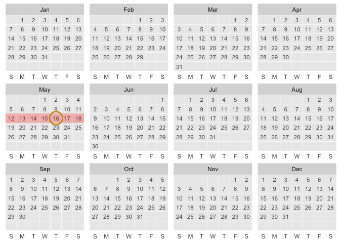
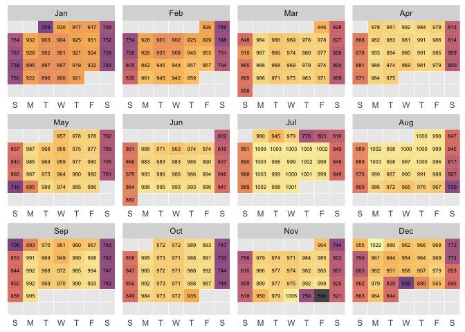

- ggcalendar
- Step 00. Convenience functions, dates vectors to data frames.
- Step 1 & 2. Compute: from date to x/y, & define StatCalendar
-
Step 3. Let’s write a user-facing function
stat_calendar() - aliasing and convenience
-
defaults_calendar&ggcalendar()Thinking about set of scales/coords etc, that gives you a nice calendar (to wrap up into defaults) - NYC flights Example
- Births example
- data defaults to calendar year and aes(date = date)
- Minimal Viable Packaging
- Traditional README
- more ideas
Note: This README walks through package rational and contains the code that defines proposed package functions and in addition to first-cut testing. TLDR - Jump to traditional readme content
Here’s a proposal for creating calendars with ggplot2 via Stat extension.
When using calendars, ‘when?’ and ‘where?’ are the same question! So, ggcalendar introduces a new positional aesthetic: ‘date’. Let’s put things on the calendar!
In this proposed package, we’ll specify the position of a calendar event calendar using dates as the required aesthetic: aes(date = my_variable_of_dates)! Then you can use layers function stat_calendar() and derivative geom functions geom_text_calendar, geom_tile_calendar and geom_point_calendar to place specific grobs/mark in the plot space.
Under the hood, the compute_group functions finds the x and y position for the date in the month (x is day in week and y is week in month). Faceting by month is used to prevent over-plotting.
Other possible directions would be to calculate x and y based on date in month and on month - instead of relying on faceting by month. Furthermore, a dedicated Coord could be created (Teun’s thought). Then maybe dates would just feed generically in as the ‘x’ aes - this sounds cool!
# install.packages("devtools")
devtools::install_github("EvaMaeRey/ggcalendar")Step 00. Convenience functions, dates vectors to data frames.
Because ggplot2’s diet is consists solely of dataframes, we create a number of convenience functions that will help us produce dataframes with column ‘date’ we can feed into ggplot2.
knitrExtra:::chunk_to_r("df")
df_today <- function(){
data.frame(date = Sys.Date())
}
df_day <- function(date = NULL){
if(is.null(date)){date <- Sys.Date()}
data.frame(date = date)
}
df_dates_interval <- function(start_date, end_date){
data.frame(date = as.Date(start_date):as.Date(end_date) |>
as.Date())
}
df_month <- function(month = NULL, year = NULL){
if(is.null(month)){
date <- Sys.Date()
month <- lubridate::month(date)
}
if(is.numeric(month)){
month <- stringr::str_pad(month, width = 2, pad = "0")
}
if(is.null(year)){
date <- Sys.Date()
year <- lubridate::year(date)
}
paste0(year,"-", month, "-01") |>
lubridate::as_date() ->
start_date
start_date |> lubridate::ceiling_date(unit = "month") ->
end_date
data.frame(date =
df_dates_interval(start_date,
end_date - lubridate::days(1)))
}
df_week <- function(date = NULL){
if(is.null(date)){date <- Sys.Date()}
start_date <- lubridate::floor_date(date, unit = "week")
end_date <- lubridate::ceiling_date(date, unit = "week")
data.frame(date = df_dates_interval(start_date,
end_date - lubridate::days(1)) )
}
return_df_hours_week <- function(date = NULL){
if(is.null(date)){date <- Sys.Date()}
start_date <- lubridate::floor_date(date, unit = "week")
data.frame(date = (start_date + lubridate::hours(1:(24*7-1))))
}
df_year <- function(year = NULL){
if(is.null(year)){year <- lubridate::year(Sys.Date())}
paste0(year, "-01-01") |>
lubridate::as_date() ->
start_date
start_date |> lubridate::ceiling_date(unit = "year") ->
end_date
data.frame(date =
df_dates_interval(start_date,
end_date - lubridate::days(1)))
}Examples
Let’s have a look at some of these.
df_today()
#> date
#> 1 2024-05-16
df_day()
#> date
#> 1 2024-05-16
df_dates_interval(start_date = "2024-10-02", end_date = "2024-10-04")
#> date
#> 1 2024-10-02
#> 2 2024-10-03
#> 3 2024-10-04
df_week()
#> date
#> 1 2024-05-12
#> 2 2024-05-13
#> 3 2024-05-14
#> 4 2024-05-15
#> 5 2024-05-16
#> 6 2024-05-17
#> 7 2024-05-18
df_year() |> head()
#> date
#> 1 2024-01-01
#> 2 2024-01-02
#> 3 2024-01-03
#> 4 2024-01-04
#> 5 2024-01-05
#> 6 2024-01-06
df_month() |> head()
#> date
#> 1 2024-05-01
#> 2 2024-05-02
#> 3 2024-05-03
#> 4 2024-05-04
#> 5 2024-05-05
#> 6 2024-05-06
return_df_hours_week() |> head()
#> date
#> 1 2024-05-12 01:00:00
#> 2 2024-05-12 02:00:00
#> 3 2024-05-12 03:00:00
#> 4 2024-05-12 04:00:00
#> 5 2024-05-12 05:00:00
#> 6 2024-05-12 06:00:00Step 1 & 2. Compute: from date to x/y, & define StatCalendar
The computation that we want to be done under the hood relates to translating the here-to-fore unknown positional aesthetic ‘date’ to the first-class ‘x’ and ‘y’ positional aesthetic mappings, as well as variables that can be used in faceting (month).
knitrExtra:::chunk_to_r("get_week_of_month")As a pre-step to computing many useful variables from our date variable, we focus on this (currently messy) conversion of vectors of dates to week of the month.
get_week_of_month <- function(x){
(- lubridate::wday(x) + lubridate::day(x)) %/%
7 + 1 +
ifelse(lubridate::wday(lubridate::floor_date(lubridate::as_date(x), "month")) == 1, 0, 1)
}Next, we’ll define a compute group function. A number of variables are created by parsing our date variable.
Then, we’ll pass all this computation to define a new ggproto object StatCalendar. For maximum flexibility, our compute function doesn’t create ggplot2 core aesthetic channels ‘x’, ‘y’, and ‘label’ variables, but instead uses the default_aes field to state what should be first interpreted as x, y and label (thoughts? Maybe only ‘label’ should be managed like this).
knitrExtra:::chunk_to_r("compute_group_calendar")
compute_group_calendar <- function(data, scales){
data |>
dplyr::mutate(wday = lubridate::wday(.data$date)) |>
dplyr::mutate(wday_abbr = lubridate::wday(.data$date, label = TRUE, abbr = TRUE)) |>
dplyr::mutate(week_of_month = get_week_of_month(.data$date)) |>
dplyr::mutate(day = lubridate::day(.data$date)) |>
dplyr::mutate(year = lubridate::year(.data$date) - 2018) |>
dplyr::mutate(month_abbr = lubridate::month(.data$date, abbr = TRUE, label = TRUE)) |>
dplyr::mutate(hour = lubridate::hour(.data$date)) |>
dplyr::mutate(year_academic = lubridate::year(.data$date) +
ifelse(lubridate::month(date) >
6, 1, 0)) |>
dplyr::mutate(month_academic_abbr = .data$month_abbr |>
factor(levels = c("Jul", "Aug", "Sep", "Oct", "Nov", "Dec",
"Jan", "Feb", "Mar", "Apr", "May", "Jun")))
}
StatCalendar <- ggplot2::ggproto(`_class` = "StatCalendar",
`_inherit` = ggplot2::Stat,
required_aes = c("date"),
compute_group = compute_group_calendar,
default_aes = ggplot2::aes(x = ggplot2::after_stat(wday),
y = ggplot2::after_stat(week_of_month),
label = ggplot2::after_stat(day)))
StatWeekly <- ggplot2::ggproto(`_class` = "StatCalendar",
`_inherit` = ggplot2::Stat,
required_aes = c("date"),
compute_group = compute_group_calendar,
default_aes = ggplot2::aes(x = ggplot2::after_stat(wday),
y = ggplot2::after_stat(hour),
label = ggplot2::after_stat(hour)))Test it out
Okay, let’s see how our compute and Stat work in action!
df_week() |>
compute_group_calendar()
#> date wday wday_abbr week_of_month day year month_abbr hour
#> 1 2024-05-12 1 Sun 3 12 6 May 0
#> 2 2024-05-13 2 Mon 3 13 6 May 0
#> 3 2024-05-14 3 Tue 3 14 6 May 0
#> 4 2024-05-15 4 Wed 3 15 6 May 0
#> 5 2024-05-16 5 Thu 3 16 6 May 0
#> 6 2024-05-17 6 Fri 3 17 6 May 0
#> 7 2024-05-18 7 Sat 3 18 6 May 0
#> year_academic month_academic_abbr
#> 1 2024 May
#> 2 2024 May
#> 3 2024 May
#> 4 2024 May
#> 5 2024 May
#> 6 2024 May
#> 7 2024 May
df_month() |>
ggplot() +
aes(date = date) +
layer(stat = StatCalendar, geom = "text",
position = "identity")Step 3. Let’s write a user-facing function stat_calendar()
knitrExtra:::chunk_to_r("a_stat_calendar")
stat_calendar <- function(mapping = NULL,
data = NULL,
geom = "text",
position = "identity",
na.rm = FALSE,
show.legend = NA,
inherit.aes = TRUE, ...) {
ggplot2::layer(
stat = StatCalendar, # proto object from Step 2
geom = geom, # inherit other behavior
data = data,
mapping = mapping,
position = position,
show.legend = show.legend,
inherit.aes = inherit.aes,
params = list(na.rm = na.rm, ...)
)
}Test stat_calendar
df_year() |>
ggplot() +
aes(date = date) +
stat_calendar(color = "grey") +
facet_wrap(~month(date, label = T, abbr = T)) +
scale_y_reverse()
aliasing and convenience
To give the user a better sense of what they’ll see when using stat_calendar we create the alias, ‘geom_text_calendar()’.
knitrExtra:::chunk_to_r("geom_text_calendar")
geom_text_calendar <- stat_calendar
geom_point_calendar <- function(...){stat_calendar(geom = "point", ...)}
geom_tile_calendar <- function(...){stat_calendar(geom = "tile", ...)}
defaults_calendar & ggcalendar() Thinking about set of scales/coords etc, that gives you a nice calendar (to wrap up into defaults)
In our test of stat_calendar, we see cumbersomeness. Below, we consider even more ggplot2 decision that would make our plot easier to consume and more beautiful.
day_labels = c("S", "M", "T", "W", "T", "F", "S")
df_year() |>
ggplot() +
aes(date = date) +
stat_calendar(color = "grey") +
ggplot2::aes(date = date) +
ggplot2::scale_y_reverse(breaks = 5:0,
expand = c(0,0),
limits = c(6.5, 0.5)) +
ggplot2::scale_x_continuous(breaks = 1:7,
labels = day_labels,
limits = c(.5, 7.5),
expand = c(0,0)
) +
ggplot2::facet_wrap(~lubridate::month(date, abbr = T, label = T), scales = "free") +
ggplot2::labs(x = NULL, y = NULL) +
ggplot2::theme(axis.text.y = ggplot2::element_blank(),
axis.ticks.y = ggplot2::element_blank(),
axis.ticks.x = ggplot2::element_blank()) +
ggplot2::theme(panel.grid.major = ggplot2::element_blank()) +
ggplot2::geom_blank()
defaults_calendar & ggcalendar()
Then, we bundle these up into defaults_calendar, which can be quickly added for converting to a more polished and readable calendar.
knitrExtra:::chunk_to_r("defaults_calendar")
defaults_calendar <- function(day_labels = c("S", "M", "T", "W", "T", "F", "S")){
list(
ggplot2::scale_y_reverse(breaks = 6:0,
expand = c(0,0),
limits = c(6.5, 0.5)),
ggplot2::scale_x_continuous(breaks = 1:7,
labels = day_labels,
limits = c(.5, 7.5),
expand = c(0,0)
),
ggplot2::facet_wrap(~lubridate::month(date, abbr = T, label = T), scales = "free"),
ggplot2::labs(x = NULL, y = NULL),
ggplot2::theme(axis.text.y = ggplot2::element_blank(),
axis.ticks.y = ggplot2::element_blank(),
axis.ticks.x = ggplot2::element_blank()) +
ggplot2::theme(panel.grid.major = ggplot2::element_blank()),
ggplot2::geom_blank()
)
}Let’s check it out…
Furthermore, we provide ggcalendar as an alternative point of entry into the ggplot framework. The default data frame is even included (the current calendar year), so a full calendar will print with no additional specification.
knitrExtra:::chunk_to_r("ggcalendar")
ggcalendar <- function(dates_df = df_year(),
day_labels = c("S", "M", "T", "W", "T", "F", "S"),
labels_layer = TRUE,
color = "grey35",
size = 3,
alpha = .5){
if(labels_layer){my_layer <- stat_calendar(color = color, aes(date = date), size = size, show.legend = F)}else{my_layer <- NULL}
ggplot2::ggplot(data = dates_df) +
defaults_calendar(day_labels = day_labels) +
ggplot2::aes(date = date) +
my_layer
}Let’s check it out!
ggcalendar()
ggcalendar() +
stat_calendar(geom = "point",
data = df_week(),
color = "darkred",
size = 5,
alpha = .5)More
library(magrittr)
ggcalendar() +
# remember default data in ggcalendar() is current year of dates
aes(date = date) +
geom_tile_calendar(data = . %>%
filter(wday(date) == 3),
fill = "blue",
alpha = .2) +
labs(title = "When to do #TidyTuesday in 2024") +
stat_calendar(label = "X",
color = "darkred",
size = 5,
data = df_dates_interval(
"2024/01/01", Sys.Date() - days(1)),
alpha = .35)
df_month(year = 2023, month = 2) |>
ggcalendar()
df_month(year = 2023, month = 2) |>
ggcalendar()
df_month(year = 2023, month = 2) |>
ggcalendar(labels_layer = F) +
aes(date = date) +
geom_text_calendar(label = "Another\nday...", # override default
size = 4)
df_month(year = 2023, month = 2) |>
ggcalendar() +
aes(date = date) +
geom_text_calendar() +
geom_point_calendar(data = . %>% filter(wday(date) %in% 2:6),
alpha = .2,
size = 5,
color = "cadetblue") +
theme(panel.background = element_rect(fill = "beige"))
## basic example code
c("2022-03-19", "2022-04-09", "2022-05-07",
"2022-06-11", "2022-07-16") %>%
tibble(date = .) |>
mutate(date = date %>% as_date) |>
mutate(future = Sys.Date() < date) ->
events
df_year(2022) |>
ggcalendar() +
aes(date = date) +
geom_text_calendar() +
geom_point_calendar(data = events,
aes(color = future),
size = 8,
alpha = .5,
show.legend = F) +
labs(title = "nu2ggplot2X^2sion, 2022")
NYC flights Example
Airline on-time data for all flights departing NYC in 2013. Also includes useful ‘metadata’ on airlines, airports, weather, and planes.
Data inspiration: https://twitter.com/rappa753/status/1545729747774308354 @rappa753
# example
nycflights13::flights |>
ungroup() |>
mutate(date = as.Date(time_hour)) |>
filter(year(date) == 2013) |>
count(date) |>
ggcalendar() +
aes(date = date) +
geom_point_calendar(data = . %>% tibble(), aes(size = n,
color = n),
alpha = .7, show.legend = F) +
scale_color_viridis_c(option = "inferno", direction = 1) +
scale_size(range = c(3,8)) +
geom_text_calendar(aes(label = n), size = 2) +
NULLBirths example
births <- "https://raw.githubusercontent.com/EvaMaeRey/tableau/9e91c2b5ee803bfef10d35646cf4ce6675b92b55/tidytuesday_data/2018-10-02-us_births_2000-2014.csv"
readr::read_csv(births) |>
mutate(month = stringr::str_pad(month, 2, pad = "0"),
date_of_month = str_pad(date_of_month, 2, pad = "0")) |>
mutate(date = paste(year, month, date_of_month, sep = "-") |> as_date()) |>
filter(year == 2012) |>
ggcalendar() +
aes(date = date) +
geom_point_calendar(alpha = .4) +
aes(size = births) +
aes(color = births) +
scale_color_viridis_c() +
guides(
colour = guide_legend("Births"),
size = guide_legend("Births")
) +
geom_point_calendar(data = data.frame(date =
as_date("2012-12-25")),
size = 5, color = "red", shape = 21)
data defaults to calendar year and aes(date = date)
The following feels a little weird to me, but is allowed.
A grammar of graphics fundamental is that a statistical graphic are composed of geometries/marks that take on aesthetics (color, position, size), to represent a variable.
Below we aren’t aren’t fully stating these specifications; which feels a bit funny; I would not recommend this as a starting point.
ggcalendar() +
geom_text_calendar()
contrast <- function(colour) {
out <- rep("grey35", length(colour))
light <- farver::get_channel(colour, "l", space = "hcl")
out[light < 50] <- "grey80"
out
}
aes_autocontrast_color_on_fill <- aes(colour = after_scale(contrast(fill)))
nhl_player_births <- readr::read_csv('https://raw.githubusercontent.com/rfordatascience/tidytuesday/master/data/2024/2024-01-09/nhl_player_births.csv')
nhl_player_births |>
mutate(date = birth_date %>%
str_replace("....", "2024") %>%
as_date()) %>%
count(date) %>%
ggcalendar(labels_layer = F) + # aes(date = date) # local aes?
aes(fill = n, label = n) +
aes_autocontrast_color_on_fill +
geom_tile_calendar(alpha = .85, linewidth = 0, show.legend = F) +
scale_fill_viridis_c() +
geom_text_calendar(size = 3) +
labs(title = "Number of NHL Player Birthdays by day 1879-2005\nas celebrated in 2024")Minimal Viable Packaging
# devtools::create(".")
usethis::use_package("lubridate")
usethis::use_package("ggplot2")
usethis::use_package("dplyr")
usethis::use_package("stringr")
devtools::check()Traditional README
ggcalendar:::ggcalendar() +
ggcalendar:::geom_tile_calendar(
data = ggcalendar:::df_week(),
fill = "red",
alpha = .25) +
ggcalendar:::geom_point_calendar(
data = ggcalendar:::df_today(),
color = "goldenrod3", shape = 21,
size = 8, stroke = 1.5
)
# example
nycflights13::flights |>
ungroup() |>
mutate(date = as.Date(time_hour)) |>
filter(year(date) == 2013) |>
count(date) |>
ggcalendar:::ggcalendar(labels_layer = FALSE) +
aes(date = date) +
ggcalendar:::geom_tile_calendar(
aes(fill = n),
alpha = .7, show.legend = F) +
scale_fill_viridis_c(option = "inferno",
direction = 1) +
scale_size(range = c(3,8)) +
ggcalendar:::geom_text_calendar(aes(label = n),
size = 2) +
NULL
## basic example code
ggcalendar:::df_month(month = "2022-07") |>
head()
ggcalendar::return_dates_interval(start_date = "2022-07-01", end_date = "2022-08-31") |>
ggcalendar() +
aes(date = date) +
geom_text_calendar(size = 8) +
geom_point_calendar(data = . %>% filter(date == "2022-07-04"),
size = 8,
alpha = .5) +
geom_point_calendar(data = . %>% filter(date < Sys.Date()),
size = 10, shape = "x")more ideas
#' #' Title
#' #'
#' #' @param data
#' #' @param scales
#' #'
#' #' @return
#' #' @export
#' #'
#' #' @examples
#' #' return_dates_year(1999) %>%
#' #' head() %>%
#' #' compute_group_calendar()
#' #'
#' compute_group_weekly <- function(data, scales){
#'
#' data %>%
#' dplyr::mutate(num_day_of_week = lubridate::wday(.data$date)) %>%
#' dplyr::mutate(day_of_week = lubridate::wday(.data$date, label = TRUE, abbr = TRUE)) %>%
#' dplyr::mutate(week_of_month = (- lubridate::wday(.data$date) + lubridate::day(.data$date)) %/% 7 + 1 +
#' ifelse(lubridate::wday(lubridate::floor_date(lubridate::as_date(.data$date), "month")) == 1, -1, 0)
#' ) %>%
#' dplyr::mutate(date_of_month = lubridate::day(.data$date)) %>%
#' dplyr::mutate(which_year = lubridate::year(.data$date) - 2018) %>%
#' dplyr::mutate(month = lubridate::month(.data$date, abbr = TRUE, label = TRUE)) %>%
#' dplyr::mutate(hour = lubridate::hour(.data$date)) %>%
#' dplyr::mutate(academic_year = lubridate::year(.data$date) +
#' ifelse(lubridate::month(date) >
#' 6, 1, 0)) %>%
#' dplyr::mutate(academic_month = .data$month %>%
#' factor(levels = c("Jul", "Aug", "Sep", "Oct", "Nov", "Dec",
#' "Jan", "Feb", "Mar", "Apr", "May", "Jun")))
#'
#' }
#'
#' StatWeekly <- ggplot2::ggproto(`_class` = "StatWeekly",
#' `_inherit` = ggplot2::Stat,
#' required_aes = c("date"),
#' compute_group = compute_group_weekly,
#' default_aes = ggplot2::aes(x = ggplot2::after_stat(day_of_week %>% as.numeric()),
#' y = ggplot2::after_stat(hour),
#' label = ggplot2::after_stat(date_of_month)))
#'
#' Title
#'
#' @param dates_df
#'
#' @return
#' @export
#'
#' @examples
#' library(lubridate)
#' library(dplyr)
#' library(ggplot2)
#' library(magrittr)
#'
#' ggweekly() +
#' geom_text_weekly()
#'
#' ggweekly() +
#' geom_text_weekly(color = "grey35") +
#' labs(title = "When to do #TidyTuesday in 2022") +
#' geom_text_weekly(label = "X",
#' data = data.frame(date = seq(as.Date("2022/01/01"),
#' as.Date("2022/04/18"), "days")))
#'
ggweekly <- function(dates_df = return_hours_week(), day_labels = c("S", "M", "T", "W", "T", "F", "S")){
ggplot2::ggplot(data = dates_df) +
ggplot2::aes(date = date) +
ggplot2::scale_y_reverse(
breaks = 7:21,
expand = c(0,0),
limits = c(21 + .5,
7 - .5),
) +
ggplot2::scale_x_continuous(breaks = 1:7, labels = day_labels,
limits = c(.5, 7.5),expand = c(0,0)
#position = "top"
) +
ggplot2::facet_wrap(~epiweek(date), scales = "free") +
ggplot2::labs(x = NULL, y = NULL) +
ggplot2::theme(#axis.text.y = ggplot2::element_blank(),
axis.ticks.y = ggplot2::element_blank(),
axis.ticks.x = ggplot2::element_blank()) +
ggplot2::theme(panel.grid.major = ggplot2::element_blank()) +
ggplot2::geom_blank() +
# theme(strip.placement = "outside") +
NULL
}